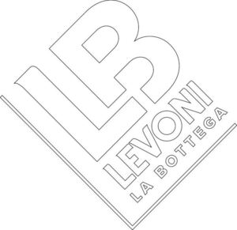

Trade Mark Journal No.2025/014 4 April 2025
WO0000001845549 (21,24,29,30,32,33,35,43)
Office of origin: European Union Intellectual Property Office (EUIPO)
Date of International Registration:21 November 2024
Date of designation in the UK:
21 November 2024

International priority date claimed: 26 July 2024
(European Union Intellectual Property Office (EUIPO))
(019059810)
- Class 21
- Vases; flower pots; pot lids; floor vases; flower pots; flower pots; glass vases; chamber pots; earthen pots; earthenware jars; perfume burners; perfume burners; flower vases; perfume burners, electric and non-electric; saucers for flower pots; saucers for flower pots; clay floor vases; glass floor vases; planters of glass; vases not of precious metal; earthenware floor vases; flower vases of precious metal; kitchen urns [not of precious metal]; holders for flowers; glasses [receptacles]; containers for pot pourri; refuse containers; flower pots; canister sets; garbage pails; candle jars [holders]; dispensers for liquid soap [for household purposes]; disposable lids for household containers; preserve glasses; foil food containers; pomanders [containers]; thermal insulated containers for food or beverage; food storage containers; all-purpose portable household containers; plastic bowls [household containers]; lotion containers, empty, for household use; plastic bag holders for household use; disposable aluminium foil containers for household purposes; glasses [receptacles]; heat-insulated containers; basins [receptacles]; tableware, cookware and containers; glasses [drinking vessels]; glass bottles; glass bulbs [receptacles]; glass pots; kitchen containers; household containers; beverage coolers [containers]; heat insulated domestic vessels of porcelain; brushes for cleaning tanks and containers; containers for cosmetics; containers for household or kitchen use; kitchen utensils; utensil jars; cutting boards for the kitchen; cosmetic utensils; dishes [household utensils]; cosmetic and toilet utensils; household utensils for cleaning, brushes and brush-making materials; window-boxes; window-boxes; planters of clay; planters of earthenware; planters of earthenware; planters of plastic; porcelain flower pots; planters of glass; flower bowls of precious metal; gardening gloves; plant baskets; repotting containers for plants; plant syringes; holders for flowers and plants [flower arranging]; indoor terrariums [plant cultivation]; water syringes for spraying plants; indoor terrariums [plant cultivation]; syringes for watering flowers and plants; flower bowls; flower baskets; flower syringes; flower pots; ritual flower vases; bouquet holders; table plates; stands for dishes; disposable table plates; glass plates; dishwashing brushes; cabarets [trays]; demitasse sets comprised of cups and saucers; cups; tea cups; cups and mugs; vacuum mugs; biodegradable cups; compostable cups; travel mugs; paper cups; paper cups; lunch boxes; drinking glasses; drinking glasses; beverageware; dental cleaning articles; glasses, drinking vessels and barware; glassware; cleaning articles; kitchen utensils; fitted sponge bags; combs; electric combs; large-toothed combs for the hair; comb cases; hair combs; combs for back-combing hair; brushes; eyebrow brushes; make-up brushes; cosmetic utensils; cosmetic utensils; toilet cases; toilet paper holders; holders for cosmetics; household and kitchen utensils and containers; stemware; decanters; cups and cups; articles of glassware, porcelain and earthenware; glass, unworked or semi-worked, except building glass; trivets of glass; containers made of glass; containers of glass and thermoplastic resin; glass holders for candles; glass phials; food containers; drinks containers; containers for cosmetics and perfumes; confectioners' decorating bags [pastry bags]; glass stoppers; brushes; sponges; cleaning articles; polishing apparatus and machines, for household purposes, non-electric; bottle openers, electric and non-electric; cutting boards for the kitchen; bowls [basins]; cooking pots; coffeepots, non-electric; baskets for household purposes; strainers for household purposes; deep fryers, non-electric; whisks, non-electric, for household purposes; graters for kitchen use; gloves for household purposes; dustbins; perfume vaporizers; cosmetic brushes; shaving brushes; powder puffs; applicator sticks for applying makeup; nail brushes; eyebrow brushes; eyelash combs; toilet brushes; powder compacts; soap holders; containers for cosmetic articles; containers for cosmetics; storage tins; facial sponges for applying make-up; toilet sponges; kitchen utensils; utensils for household purposes; soap dispensing bottles.
- Class 24
- Kitchen linen; kitchen towels; towels [textile] for kitchen use; towels [textile] for kitchen use; kitchen and table linens; table linen; textile tablecloths; table covers of plastic; oilcloth for use as tablecloths; table napkins of textile; linens; textiles; industrial fabrics; printed textile piece goods; towelling [textile]; flame resistant fabrics; elastic woven fabrics; waterproof textile fabrics; non-woven fabrics; textile material; coated fabrics; woven fabrics for cushions; woven fabrics for armchairs; window furnishing fabrics; woven furnishing fabrics; woven fabrics for sofas; upholstery fabrics; woven fabrics for furniture; wall fabrics; textiles for furnishings; household textile articles; interior decoration fabrics; bedroom textile fabrics; silk fabrics for furniture; upholstery fabrics; textile goods, and substitutes for textile goods; textiles in the form of window furnishings; fabrics for the manufacture of furnishings; hooded towels; bed clothes and blankets; linens; table linen; terry linen; bed linen and table linen; bath linen; lingerie fabric; bed linen and blankets; household linen, including face towels; duvet covers; sofa blankets; quilts; woolen blankets; bed blankets made of cotton; silk bed blankets; bed blankets made of man-made fibres; sheets [textile]; towels of textile; bath towels; towels of textile; bath towels; towels of textile; curtains; curtains for showers; swags [curtains]; ready made curtains; curtains made of textile fabrics; bed covers; bed covers; covers for cushions; textile tissues; pillowcases; furniture coverings of textile; woven fabrics; curtains of textile or plastic; fabrics for textile use; table napkins of textile.
- Class 29
- Salami; pepperoni; cured sausages; meat; meat, preserved; meat spreads; dried meat; sliced meat; meat, tinned; meat preserves; meat jellies; sausage meat; processed meat products; ham; cooked ham; prosciutto; bacon bits; dried salted beef; culatello (kind of ham); pastrami; mortadella; brawn; sausages; preserved sausages; fresh meat; frozen meat; mincemeat [chopped meat]; smoked meats; freeze-dried meat; poultry, not live; veal; beef; meat substitutes; pork; turkey meat; hamburgers; meat extracts; beef slices; pork preserves; prepared meat dishes; cooked poultry; canned pork; meat-based snack food; soups and stocks, meat extracts; frozen meat products; cooked meat dishes; fish, not live; smoked fish; dried fish; fish, preserved; pickled fish; pickled fish; frozen fish; cooked fish; fish stock; fish paste; chowder; salted fish; fish sticks; dishes of fish; fish croquettes; fish, seafood and molluscs; seafood products; frozen shellfish; frozen vegetables; vegetables, processed; preserved vegetables; preserved vegetables (in oil); prepared fruits; frozen fruits; glazed fruits; fruit, stewed; pickled fruits; fruit paste; preserved nuts; fruit marmalade; fruit-based snack food; bottled fruits; candied nuts; fruits, tinned; fruit preserves; fruit preserved in alcohol; dehydrated fruits; fruit juices for cooking; fruit-based snack food; fruit desserts; vegetables, preserved; vegetables, cooked; vegetables, dried; processed pulses; processed fruits, fungi and vegetables (including nuts and pulses); vegetables, tinned; legume salads; mushrooms, prepared; mushrooms, preserved; meat spreads; eggs; prepared dishes consisting principally of meat; prepared vegetable dishes; fish, tinned; frozen cooked fish; fish in olive oil; tuna fish [preserved]; smoked salmon; salmon caviar; caviar; tomato preserves; tomato purée; processed fruits, fungi, vegetables, nuts and pulses; fruit, preserved; fruit, processed; fruit leathers; jellies, jams, compotes, fruit and vegetable spreads; oil; jams; cheese; almonds, ground; hazelnuts, prepared; prepared pistachio; prepared walnuts; preserved, dried and cooked peanuts; jellies; marmalade; fruit peel; milk; whey; milk products; crystallized fruits; frozen fruits; fruits in syrup; dried fruit; dark and peeled almonds; edible oils and fats; milk products; cream (dairy products); butter; jams and jellies; milk and milk products; egg yolks; yolk of eggs; egg mixtures; powdered egg white; sweetened egg yolk; jams; dehydrated fruits and vegetables; freeze-dried fruits and vegetables; preserved, dried and cooked fruits; freeze-dried fruits; edible oils and fats extracted from dried fruit; milk and milk products; dairy-based dips; fruit jelly spreads; lemon juice.
- Class 30
- Pizzas; pies; cupcakes; foodstuffs made from cereals; yeast; leaven; instant yeast; yeast and leavening agents; ready-made baking mixtures; preparations for making bakery products; pizza flour; bread concentrates; barm cakes; dried pasta; rice; prepared rice dishes; dry and liquid ready-to-serve meals, mainly consisting of pasta; tomato sauce; pesto [sauce]; spaghetti sauce; pasta sauce; preparations for making up into sauces; meat gravies; sauces; cereals; processed grains; barley meal; processed grains, starches, and goods made thereof, baking preparations and yeasts; pastries; bakery goods, bread and leavened products, vinegar, fresh pasta, chocolate, honey, sugar, salt, spices; coffee; mixtures of coffee; decaffeinated coffee and coffee extracts; artificial coffee; coffee-based beverages; tea; barley drinks and ginseng drinks; herbal teas; infusions; fruit-based tea; preparations and beverages based on teas, herbal teas, fruit teas, infusions or derived extracts; vegetal preparations for use as coffee substitutes; vegetable based coffee substitutes; chocolate-based beverages; chocolate-based beverages; roasted barley and malt for use as substitute for coffee; infusions, not medicinal; herbal infusions; tea for infusions; aromatic preparations for making non-medicated infusions; flowers or leaves for use as tea substitutes; coffee and cappuccino; chocolate-based beverages with milk; coffee-based beverage containing milk; cocoa; preparations based on cocoa; beverages based on cocoa and/or chocolate; chocolates; sponge cake; caramels [candy]; sweetmeats [candy]; sugar; sugar candy [for food]; chocolate; chocolate and substitutes; decorations and confectionery; flavors; finished pastry products; semi-finished pastry products; mixes for breadmaking; mixes for pastry; sponge cake; castor sugar; biscuits; fresh pasties; tarts; cream puffs; eclairs; muffins; doughnuts; gluten-free biscuits; organic sweets; organic biscuits; chocolate for confectionery; baking powder; confectionery products; almond paste; nut paste; hazelnut paste; pistachio paste; sweet creams for foods; chocolate-based spreads; creams based on cocoa; chocolate topping; creams based on fruit; honey; ice cream; ice milk [ice cream]; ice cream stick bars; ice confectionery; ice cream gateaux; iced cakes; cones for ice cream; ice cream stick bars; ice confectionery; fruit ices; ices and ice; ice cream desserts; ice cream substitute; frozen yoghurt [confectionery ices]; ice cream sandwiches; frozen confectionery containing ice cream; yoghurt based ice cream [ice cream predominating]; ice cream drinks; parfaits; soy-based ice cream substitute; ice milk bars; coffee-based beverages containing ice cream (affogato); ice cream; ice cream mixes; soft ices; edible ices; binding agents for ice cream; cones for ice cream; sauces for ice cream; ice cream with fruit; ice cream confectionery; powders for making ice cream; frozen lollipops; ice creams containing chocolate; frosting mixes; frozen yoghurts and sorbets; binding agents for ice cream; aromatic preparations for ice-creams; sorbets [water ices]; organic binding agents for ice cream; macaron shells; fresh pasta; pasta containing stuffings; gnocchi and chicche (pasta); macaroons [pastry]; gluten-free pasta; gluten-free croissants; organic dried pasta; mayonnaise; vinegar; cooking salt; tomato ketchup; tapioca; sago; cereal preparations; bread; golden syrup; spices; sauces [condiments]; ice for refreshment; mustard; crackers; thin breadsticks; panettone; pandoro; prepared desserts [pastries]; pastry dough; aromatic preparations for pastries; bread, pastry and confectionery; prepared pie crust mixes; fruit confectionery; fruit filled pastry products; flour and preparations made from bread, pastry, cereals and confectionery; cocoa and artificial coffee; rice, rice and sago pasta and spaghetti flour and preparations made from cereals; bread, pastry and confectionery; chocolate; ice cream, sorbets and other edible ices; sugar, honey, treacle; yeast; confectionery; prepared desserts [confectionery]; candy coated confections; fruit jellies [confectionery]; flavoured sugar confectionery; orange based confectionery; flour confectionery; almond confectionery; confectionery having liquid fruit fillings; crystal sugar pieces [confectionery]; snack bars containing a mixture of grains, nuts and dried fruit [confectionery]; petits fours [cakes]; pastries containing fruit; cream puffs; chocolate pastries; pastries, cakes, tarts and biscuits (cookies); prepared meals containing [principally] rice; prepared meals containing [principally] pasta; filled bread rolls; fresh bread; dough; bread and buns; pizzas; pizza mixes; pizza bases; frozen pizza crusts; doughs, batters, and mixes therefor; foodstuffs made from dough; frozen dough; cake doughs; ham glaze; snack food products consisting of cereal products; cereal-based snack food; snack foods consisting principally of bread; snack foods consisting principally of confectionery; essences for use in cooking [other than essential oils]; flavour enhancers for food [other than essential oils]; preparations for making bakery products; flour based savory snacks; gluten-free bakery products; flour ready for baking; fruit sauce.
- Class 32
- Waters; mineral water [beverages]; aerated water; aerated water; still water; preparations for making aerated water; waters; flavoured waters; fruit flavoured waters; mineral and aerated waters; syrups for making flavoured mineral waters; non-alcoholic malt drinks; concentrates for use in the preparation of soft drinks; powders for making soft drinks; essences for making non-alcoholic drinks, not in the nature of essential oils; soft drinks; non-alcoholic fruit juice beverages; non-alcoholic beer; lagers; malt beer; black beer [toasted-malt beer]; imitation beer; beer-based beverages; syrups for making soft drinks; organic drinks and juices, mineral waters, fruit nectars and juices; gluten free beer; beer; stout; beer-based cocktails; non-alcoholic beer flavored beverages; beer; flavored beers; craft beers; beers enriched with minerals; beer and brewery products; energy drinks; isotonic beverages; waters [beverages]; non-alcoholic beverages; protein drinks; soft drinks; soft drinks; syrups for beverages; fruit drinks; fruit squashes; carbonated non-alcoholic drinks; vegetable juices [beverages]; beverages containing vitamins; non-carbonated soft drinks; flavoured carbonated beverages; energy drinks containing caffeine; vegetable juices [beverages]; non-alcoholic fruit juice beverages; fruit-flavoured beverages; protein-enriched sports beverages; non-alcoholic flavored carbonated beverages; tomato juice [beverage]; powders for effervescing beverages; dilutable preparations for making beverages; non-alcoholic preparations for making beverages; vegetable drinks; non-alcoholic fruit juice beverages; fruit-based beverages; beverages consisting of a blend of fruit and vegetable juices; water-based beverages containing tea extracts; syrups.
- Class 33
- Distilled beverages; alcopops; pre-mixed alcoholic beverages; alcoholic energy drinks; alcoholic beverages (except beer); alcoholic beverages (except beer); wine-based beverages; preparations for making alcoholic beverages; rum-based beverages; alcoholic preparations for making beverages; alcoholic beverages of fruit; wine; red wine; white wine; grape wine; strawberry wine; beverages containing wine [spritzers]; wine-based aperitifs; prepared wine cocktails; wine coolers [drinks]; liqueurs; bitters; digestifs [liqueurs and spirits]; liquor-based aperitifs; coffee-based liqueurs; alcoholic beverages of fruit; beverages containing wine [spritzers]; spirits and liquors; herb liqueurs; digestives (liqueurs and spirits); whisky; rum; grappa (GI), marc brandy; spirits [beverages]; spirits [beverages]; vodka; gin; flavored liquors; "Vermut di Torino / Vermouth di Torino" (GI) aromatised wines; "Tequila" (GI) spirit drinks; alcoholic aperitifs; sparkling wines; "Champagne" (GI) wine; "Eau-de-vie de Cognac / eau-de-vie des Charentes / Cognac" (GI) wine brandy; "Armagnac" (GI) wine spirit produced in the subregion "Bas-Armagnac".
- Class 35
- Retail services relating to delicatessen products; business management of wholesale and retail outlets; sales administration; sales promotion; trade marketing [other than selling]; information about sales methods; sales management services; sales promotion; provision of commission sales staff; sales promotion for others; rental of sales stands; business management of retail outlets; business management of wholesale outlets; advertising; advertising; dissemination of advertising matter; promotion services; promoting and conducting trade shows; sales promotion using audiovisual media; sales promotion through customer loyalty programs; advertising particularly services for the promotion of goods; promoting the goods and services of others through infomercials; promotion, advertising and marketing of on-line websites; provision of information relating to commerce; wholesale services in relation to food preparation implements; providing consumer product information relating to food or drink products; unmanned retail store services relating to food; retail services relating to food preparation implements; retail services connected with the sale of subscription boxes containing food; online ordering services in the field of restaurant take-out and delivery; retail services relating to food; retail services via catalogues related to foodstuffs; mail order retail services related to foodstuffs; retail services via global computer networks related to foodstuffs; demonstration of goods for promotional purposes; product launch services; demonstration of goods; services with regard to product presentation to the public; goods or services price quotations; providing assistance in the field of product commercialization; providing consumer product information; product demonstrations and product display services; providing consumer product advice; wholesale services in relation to baked goods; retail services in relation to dairy products; providing a searchable online advertising guide featuring the goods and services of other on-line vendors on the internet; administration of a discount program for enabling participants to obtain discounts on goods and services through use of a discount membership card; wholesale services in relation to meats; retail services in relation to meats; promotion of goods and services through sponsorship of sports events; promotion of goods and services through sponsorship.
- Class 43
- Serving food and drinks; hotel restaurant services; hospitality services [food and drink]; snack-bar services; take-away restaurant services; services for providing food and drink; food preparation services; consultancy services relating to food; food preparation services; food and drink catering for cocktail parties; services for the preparation of food and drink; providing of food and drink via a mobile truck; provision of information relating to the preparation of food and drink; bar services; providing food and drink in restaurants and bars; bar and restaurant services; delicatessens [restaurants]; snack-bar services; restaurant services; take-away restaurant services; restaurant reservation services; café services; self-service restaurant services; café services; services for the preparation of food and drink; restaurant services; corporate hospitality (provision of food and drink); take-away food and drink services.
LEVONI S.p.A.
Representative: BUGNION S.P.A., Viale Lancetti 17, I-20158 Milano, ITALY